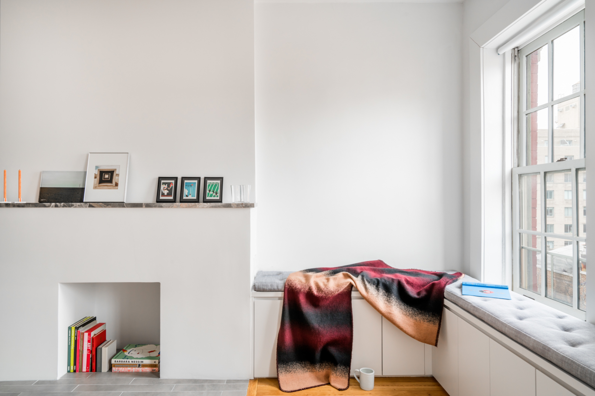

Featured Faculty

Jieun Yang is the Founding Principal of Habitat Workshop,
an award-winning architecture and urban design practice with experience ranging from civic and research projects to homes and exhibitions. Habitat Workshop creates spaces, objects, ideas, and experiences that endure and embrace human connection and placemaking. Current projects include a collective farm kitchen in upstate New York, a tactical urban design strategy in Newburgh, NY, several residential renovations and installations. Habitat Workshop believes in the surprising potential of the ordinary. By uncovering the unseen and the dismissed, the practice mediates through purposeful agitation to create understanding and belonging. The projects are defined by time rather than scale - long-term, near-future, and immediate impacts – and work together to support the process of discovery, speculation, iteration, and refinement. The process searches for the in-between and creates opportunities for overlaps and gaps created by working in continuous oscillation: singular and collective, interior and exterior, fast and slow, rough and refined, habitual and unexpected, local and global, and, temporary and permanent.

Partnerships and collaborations are the main forces in finding a common ground through design. In working with non-profit organizations and community groups, Habitat Workshop curates and transforms collective experiences, solves problems through visualizing the potential, and provides a tool kit for the community to imagine and build a better place. Global collaborations through traveling exhibits and research projects also contribute to the process of continuously refining ways of knowing, asking, learning and making to embrace the unknown and the familiar.
Jieun Yang received a B.A. in architecture from Yale University and an M.Arch from Columbia University. Before founding Habitat Workshop, she worked at SOM and 1100: Architect in New York working on cultural, public, and residential architecture.
West Village Apartment
Residential Renovation
New York, NY
Best in Design 2019, Interior Design
Photo Credit: Cameron Blaylock

For a studio apartment in New York’s West Village, the space is defined using a common necessity that is nevertheless hard to come by in cramped city apartments: storage. While small at a cozy 320 square feet, the studio feels spacious, thanks to its neutral material palette. Custom built-ins define the kitchen, where cabinetry forms an elongated grid. The living room’s storage units, meanwhile, trace the perimeter of the apartment, integrating existing architectural elements, including windows, portals, and the monumental fireplace, now repurposed as an ersatz library.
Layered Fragments
Installation for BKLYN Designs
Brooklyn, NY
NYC x DESIGN 2018 Honoree
The project challenges the notion of fragments as separation by highlighting moments of visual and tactile connections resulting in weaving of diverse individual experiences. Fragmented reflections in curvilinear array dematerialize self-reflections by weaving in multiple disparate surrounding episodes within and around the installation. By pairing a perfect circle (Part A) and layers of fragmented arcs (Part B) in dialogue, the spatial experience of approaching, inhabiting, and exiting negotiates through varying thickness of layering and distortion leading to a kaleidoscopic collage.
Urban Forest
Temporary Outdoor Installation
New York, NY
In collaboration with Ji Young Kim
The site provides a perfect opportunity for creating and capturing varying altered everyday experiences of the participants. By connecting these various rhythms of urban movements, Urban Forest extends the existing forest and creates a set of simultaneous interactions with the project, with other participants, and the city. Ranging from alteration in one’s daily path through the city to impromptu gatherings organized, the project creates a new landscape through reinterpretation and reinvention of the everyday landscape.
The site provides a perfect opportunity for creating and capturing varying altered everyday experiences of the participants. By connecting these various rhythms of urban movements, Urban Forest extends the existing forest and creates a set of simultaneous interactions with the project, with other participants, and the city. Ranging from alteration in one’s daily path through the city to impromptu gatherings organized, the project creates a new landscape through reinterpretation and reinvention of the everyday landscape.
The Jewerly of Ideas
Exhibit Design for Cooper Hewitt,
Smithsonian Design Museum
New York, NY
In collaboration with With Projects, Inc.
In developing an exhibit design strategy for Cooper Hewitt’s latest donation, abstract patterns from enlarged details of displayed objects define and complement curatorial categories and narratives through the exhibit space designed for a collection of jewelry exploring ideas of nature, technology, human body, art, and history

In developing an exhibit design strategy for Cooper Hewitt’s latest donation, abstract patterns from enlarged details of displayed objects define and complement curatorial categories and narratives through the exhibit space designed for a collection of jewelry exploring ideas of nature, technology, human body, art, and history

Odd Lots
Urban Design Strategy
Brooklyn, NY
Produced as a part of the Institute for Public Architecture’s 2016 Residency Live / Work for the Workforce
Odd Lots is a strategy on creative urbanism that identifies oddly shaped undevelopable lots in New York City and speculates their potential temporary and permanent transformations. The project imagines a three-tier solution that ranges from a temporary residency to a permanent space with test fits on three existing odd lots in Brooklyn. In harnessing hidden assets for the public through establishing cultural capital that engages with the community and connects to a larger economy of creative industries, the goal of the project is not only to solve the crisis of maintenance but more importantly to promote opportunities of interdependent urbanism.
Odd Lots is a strategy on creative urbanism that identifies oddly shaped undevelopable lots in New York City and speculates their potential temporary and permanent transformations. The project imagines a three-tier solution that ranges from a temporary residency to a permanent space with test fits on three existing odd lots in Brooklyn. In harnessing hidden assets for the public through establishing cultural capital that engages with the community and connects to a larger economy of creative industries, the goal of the project is not only to solve the crisis of maintenance but more importantly to promote opportunities of interdependent urbanism.